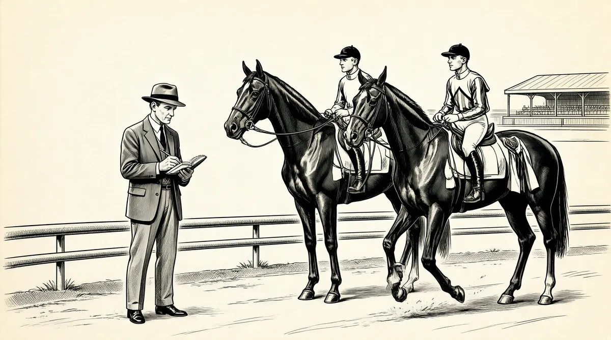

第22章 隐藏的光辉

我大约有174000美元，准备退休了。我在奥马哈安德伍德大街5202号租了一间房子，每个月付175美元。我们每年的生活费是12000美元，而我的资产还在增长。
回想起来，沃伦在26岁的年纪就开始使用“退休”这个词，着实会让人觉得奇怪。也许这是降低预期的一种方式，也许他的意思是把资产看作可以使人变得富有的工具。资本的监督者不是一个受雇用者。
以数字而言，沃伦理论上可以凭借现在拥有的钱退休，而且到35岁就可以达到他成为百万富翁的目标。（那时候的100万美元相当于2007年的800万美元。）自从怀揣9800美元上哥伦比亚大学以来，每年他的资金增长率都超过61%。可是他还是很急，为了达到目标，他需要非常大的复合增长率。1因此，他决定成立一个合伙公司，类似格雷厄姆–纽曼的姐妹对冲基金纽曼–格雷厄姆。2这样，也许他就不用把它看成是一份工作。事实上，这是无须拥有一份“工作”的几近完美的解决方式。他不会有老板，可以在自己的家里投资，还可以让朋友和亲戚们买他自己也买的股票。如果他可以在为合伙人挣的每1美元中提取1/4的费用进行再投资，那么他成为百万富翁的速度就会快很多。拥有本杰明·格雷厄姆买股票的方法和格雷厄姆式的对冲基金，因而他有充足的理由把自己看成一个富人。
现在，他的想法只面临一个问题：他无法忍受合伙人因股票价格下跌而带来的批评。但是，沃伦已经找到了一个解决办法。他打算只邀请自己的家庭成员和朋友们——他确信会信任他的人——加入合伙公司。1956年5月1日，以纽曼–格雷厄姆模式为基础3，共有7位合伙人的巴菲特联合公司正式成立了。
汤普森博士投资了25000美元。“汤普森博士基本上把他所有的钱都给我了，我就是他的孩子。”沃伦的姐姐多丽丝和她的丈夫杜鲁门·伍德投了10000美元，他的姑姑艾丽斯·巴菲特投了35000美元。“在那之前，我已经将股票卖给了其他人，现在我成为那些对我而言非常重要的人的受托人。他们都很信任我。如果我想过我会失去这些钱，无论如何我也不会要我的姑姑艾丽斯或者姐姐，还有岳父的钱。基于这一点，我认为我不会损失这笔钱。”
沃伦已经和他的父亲单独成立了一个合伙公司，而他的妹妹伯蒂及其丈夫没有钱参与。因此，他的沃顿室友查克·彼得森成为他的第四位合伙人，投了5000美元。因为是室友，查克非常了解沃伦以及他在金融方面的成熟运作经验。在沃伦去纽约之前，查克就从沃伦那儿买过股票，成为第一批让沃伦“开方子”的人之一。“我真的很了解他有多聪明、多诚实，而且多么有能力，”他说，“我会一直信任他，除非有事实来反证。”4沃伦的第五个合伙人是彼得森的母亲伊丽莎白，她投入了25000美元，是上一年去世的丈夫留给她的。
第六个合伙人丹·莫奈是一个安静、健壮、黑头发的年轻人，是沃伦儿时的玩伴，他们曾一起在欧内斯特·巴菲特家的后院挖蒲公英。他现在是沃伦的律师，没有多少钱，不过也尽其所能，投资了5000美元。
沃伦是第七个合伙人，只投资了100美元。他的股份的其余部分将来自通过经营基金获得的利润中收取的费用。“实际上，我是从管理合伙公司中获得杠杆作用的。我有的是主意，而不是资本。”事实上，按照这个国家大多数人的标准，沃伦已经有的是资本了。不过，他把这个合伙公司看成是个混合机器——一旦钱投进去，就不能企图撤回。因为他需要从他剩余的资金上挣取一年12000美元的家庭生活费用，这部分钱他将单独投资。
他设计了一个收费公式。
4%以上的收益我拿一半，4%以下的我收1/4。因此，如果不赔不赚，我就会亏钱。而且我赔偿损失的责任并不局限于我的资本，它是无限责任的。5
那时，沃伦已经在为安妮·戈特沙尔特和凯瑟琳·埃伯菲尔德，哥伦比亚大学一个叫弗雷德·库尔肯的朋友的母亲和姨妈管理资金。去年弗雷德起程前往欧洲之前就请沃伦帮忙照看他的姨妈和母亲的一部分钱。6从那时起，沃伦一直尽可能谨慎地将那部分钱投资于政府债券，费率不同且安排更为适度。
他本可以邀请戈特沙尔特和埃伯菲尔德加入合伙公司，不过他觉得要收取比她们目前水平更高的费用不太公平。当然，如果他对这个合伙公司很有把握，不让她们合伙也意味着他剥夺了她们的一次大好机会。然而，一旦投资出了差错，他的姑姑和姐姐，以及汤普森博士永远都不会责备他；而对其他人，他却没有这样的把握。
对沃伦而言，扮演一个“受托人”意味着他承担的责任是无限的。为了让他的合伙人知晓这些基本原则，他在公司成立的第一天就召开了第一次正式会议。查克在奥马哈俱乐部为大家预约了晚餐。在这个城市里，如果你想要一个私人空间，那就是最好的去处了。沃伦想要认真地定义和限定他的责任，而一个他不愿意承担的责任就是为晚餐埋单。他让查克传话给大家说各付各的。7接着，他不仅将这顿晚餐变成了讲述有关合伙人关系的基本原则，而且是谈论股票市场的机会。他已经将这个合伙公司看成一个教学试验了。
合伙人迅速分为两个阵营：绝对禁酒者和好喝人士。在桌子的一端，汤普森博士以家长的方式提醒那一部分人快要进地狱了。然而，沃伦才是那个夜晚的传道者，他们都在那儿听他滔滔不绝。
我以与投资者们的协议开始，在我们已经展开的基础上不需要改变太多。要知道，所有的好事都由此而来。这是我能想到的最不复杂的一件事。
我就基本原则向他们作了一个简短概括的发言：这些是我能做的；这些是我不能做的；这些是我不知道能不能做的；这是我如何评价自己的。发言非常短。如果你不这么认为，可以不加入，因为我不希望将来我高兴的时候你不高兴，或者相反。8
沃伦发起合伙公司后，巴菲特夫妇返回纽约过了最后一个夏天。格雷厄姆–纽曼合伙公司结束时，沃伦一直在帮助本杰明和杰里。米基·纽曼现在是P&R公司的首席执行官，一份全职工作。因为他和沃伦都不可能做普通合伙人，格雷厄姆决定关闭公司。9沃伦从他的朋友汤姆·纳普那儿租了长岛的一间乡村海边小屋给全家居住，那座房子是很多年以前建造的，让人们能够躲避流感传染的一群建筑的一部分，坐落在西部草地海滩，接近位于长岛北部海岸的纽约州立大学石溪分校，与康涅狄格州隔长岛海峡相望。
工作日期间，沃伦在他的股票经纪人朋友亨利·勃兰特家蹭床睡，他的妻子和孩子们也在长岛过夏天。周末沃伦就加入海边的家庭，在房子中一间小小的卧室里工作。邻居们告诉纳普夫妇，他们从来没有见到过他。10在沃伦工作的时候，怕水而且从不游泳的苏珊和两个孩子就沿着接近水边的岩石旁玩耍。因为屋子里的抽水设备不足，夫妇俩就从路对面的泉水边提取饮用水，苏珊给接近3岁的苏茜洗澡，而她自己和18个月大的豪伊就在户外用冷水淋浴。
这个夏天带给他们两个震惊的消息。沃伦儿时的伙伴鲍勃·拉塞尔的父亲自杀了。安妮·戈特沙尔特和凯瑟琳·埃伯菲尔德，哥伦比亚大学的朋友弗雷德·库尔肯的母亲和姨妈打电话来说，弗雷德在葡萄牙的车祸中丧生，当时他的汽车滑了80英尺远，撞上了一棵栓皮栎树。11
夏天结束了，巴菲特夫妇计划返回奥马哈。沃伦设法不让任何人因失望而表现出的极度谨慎，与他要在纽约之外的城市单独从事投资生涯这一具有风险的决定，形成强烈对比。市场是由那些在交易所吃午饭或者每周打一次扑克的人形成的关系组成的。小道消息和流言因在投资者自助餐、酒吧、壁球场或者大学俱乐部的偶然一次碰面而四处游走。虽然每个小的地区城市都会有一两个小型经纪公司——如巴菲特–福克——但那些都不是什么重要的角色。内地充斥着股票经纪人——靠曼哈顿的“钱医生”开的处方或幸存或成功。在那个年代，美国的金融家除了在纽约，不可能在其他地方工作。离开纽约的一切而单独行动，认为在其他地方也能致富，无疑是一个大胆、冒险的举动。
事实上，在20世纪50年代，一个大学研究生独自创业，在家里一个人单独工作是非同寻常的事情。这个穿着灰色法兰绒西服的男人，就是个勇往直前的家伙。12商人们加入大的机构——越大越好——然后为了能沿着成功的阶梯稳步攀升，不费太大力气得到报酬最丰厚的工作或者是高尔夫俱乐部，在粉饰的表象下你争我斗。他们相互竞争的不仅是财富，还有权利，或者至少在一个好的郊区买一栋像样的房子，每年能换一款新车，为一生的保障铺平道路。
因此，沃伦对职业的选择就像巴菲特家族的人给民主党投票一样稀有。于是，相当了解丈夫的不寻常品质——除非他正在描绘的事业有明显的风险——的苏珊就安排搬运工人过来，和邻居们道别，寄通知地址改变的卡片，切断电话服务，打包行李。她带着苏茜和豪伊飞回奥马哈，住进沃伦从查克·彼得森那儿租的位于安德伍德大街的房子。查克选择了一座吸引人的灰色都铎式两层楼建筑，有漂亮的半横梁、一个大的石头烟囱和一个教堂式的屋顶。甚至租房子的决定也是非传统的，拥有一所房子是20世纪50年代中期大多数美国年轻人的愿望。大萧条时期的无望，生活将就的沉闷的战争岁月，已经在人们的记忆中开始褪色。美国人在他们的新房子里装满了突然之间冒出来的令人激动的新玩意儿和设施：带甩干的洗衣机、电冰箱、洗碗机、电动搅拌机。巴菲特夫妇有足够的钱买这些。不过，沃伦对他的资产有另外的打算，于是他们采用租房的方式。因为房子是租来的，所以尽管房子很吸引人，也只不过是勉强够他们住而已。要不然，快两岁的豪伊就应该睡在大一点儿的房间里了。
苏珊在奥马哈安家的时候，沃伦在纽约处理了自己的最后事务。他把自己的桌子和文件打包，给自己持有股票的公司发通知以确保红利支票能跟着他回到奥马哈。接着，他就坐进自己的小汽车开回内布拉斯加，一路上拜访一些公司。
“我走的路线弯弯曲曲。我只是认为现在是去那些公司的大好机会。我开车穿过宾夕法尼亚州的黑泽尔顿市，拜访了杰多–高地煤炭公司；我穿过卡拉马祖，见到了卡拉马祖熔炉公司。这个小奥德赛之旅穿过特拉华州、俄亥俄州，我拜访了格瑞夫兄弟桶业公司，那家公司的股票价格便宜得简直不可思议。”1951年他在翻阅《穆迪手册》时第一次发现了这只股票。他和他的父亲分别买了200股，并且放入了他们俩的合伙公司里。
夏天快结束时，沃伦回到了奥马哈，他发现家里需要他。苏茜安静胆怯地坐在那儿，看着弟弟无休止地要求吸干妈妈的精力。13但是到了晚上，她就需要爸爸：现在她害怕上床睡觉。他们搬来进这栋房子的时候，搬运公司一个戴眼镜的人和苏茜说过话，虽然她不记得当时他说了什么不好的话，但她很恐惧，直到现在还认为那个戴眼镜的男人仍然潜伏在她的卧室外面，而卧室紧挨着可以环顾整个起居室的用锻铁修饰的阳台。每个晚上，沃伦不得不检查一下阳台，向她再次确保睡觉是安全的。
处理好“戴眼镜的男人”后，沃伦走下楼到他和苏珊卧室外面的小小日光浴室，开始着手业务上的事，要么是合伙公司的工作，要么是准备他的课程——除了建立合伙公司，他回到奥马哈所做的第一件事是在奥马哈大学为秋季学期上两门课：只为男人准备的投资分析，以及智慧投资。不久，他又加上了第三门课程：女人如何投资。那个在戴尔·卡内基班上不敢搭话的害羞的男孩消失了，取而代之的是一个虽然还不太熟练，但仍然让人印象深刻的年轻人。他在教室里不停地走来走去，教导着学生，并且嘴巴里会跑出一连串的事实和数字。穿着那套看起来大了两个码的廉价西服，他看起来更像是某个教派的年轻传教士，而不是大学的讲师。
尽管沃伦光芒四射，但他仍然不是很成熟，对苏珊而言，他在家里的无用，意味着他就像第三个需要照顾的孩子。他的个性和爱好定型了他们的社交生活。在奥马哈这样一个中等规模的中西部城市，重要的文化机构相对比较少，周末都是婚礼、聚会、茶会以及与慈善相关的事。巴菲特夫妇与他们同阶层和同时代的大部分年轻已婚夫妇相比，生活更为平静。虽然苏珊开始在初级联盟中往上攀升，并且他们也加入了一个美食团体——沃伦礼貌地要求每月的主办者为他做一个汉堡包——他们和朋友的联谊不是成群结队，而是一两个。他们绝大多数的社交生活是和其他夫妇小规模地吃晚饭，或者是偶尔参加晚宴，在晚宴上沃伦可以谈论股票。总会出现相同的情况：沃伦的娱乐方式要么是对着某个观众滔滔不绝地大谈股票，要么就是弹奏夏威夷四弦琴。在苏珊的指导下，虽然他可以比以前更容易地对别的主题发表评论，但他的思维还是集中在挣钱上，在家里举办餐会或者聚会时，他经常会在中途就离席上楼逃避交谈。但是和本杰明·格雷厄姆不同，他不是待在楼上读普鲁斯特的作品，而是在工作。至于苏珊，她对沃伦干什么知之甚少，也很少关心。“我过去常常说他的工作是‘证券分析师’14，而人们会以为他是检查防盗报警器的。”
沃伦所有的休闲活动都是重复的，充满竞争的，最好是两者兼备。他发现无法忍受和苏珊打桥牌，因为她总是希望对手能赢，于是他很快就去寻找别的搭档了。15他的思维就像是一只不安分的猴子；为了放松，他需要一种能集中注意力的活动让这只猴子闲下来。乒乓、桥牌、扑克、高尔夫都会吸引他的注意力，而使他能短暂地不用去想钱的事。但是，他从来不在院子里举办烧烤聚会，他会在游泳池边懒散地闲逛，眺望星星，或者就在林子里走走。看星星的沃伦应该看到过北斗七星，而且看到像美元的符号吧！
所有这些，加上不合常规的倾向，意味着沃伦不是一个“参与者”，只是在委员会或董事会议上干坐而已。可是，当他的叔叔弗雷德·巴菲特请他加入扶轮社时，家庭的忠诚让他一口答应。他喜欢巴菲特杂货店的经营者弗雷德，他和弗雷德一起到扶轮社打保龄球（重复的、有竞争的）；另外，他的祖父以前是扶轮社的主席。
另一方面，当被邀请加入“阿克萨本骑士团”时——这是一个更为重要的公民领袖的团体，融合了慈善、商业、社会活动等——沃伦却拒绝了。对一个还需要筹集资金的发展中的基金管理人而言，这无异于无视那些掌管奥马哈的人——过于骄傲的自信，甚至是傲慢的行为，这使他和同一阶层的很多人相隔离。他的姐姐多丽丝已经像“阿克萨本公主”一样首次登场了，而他以前的室友、现在的姐夫杜鲁门·伍德的姐姐也已经是“阿克萨本王后”了。而像查克·彼得森这样的朋友们，也是这个社交圈的常客。作为一个国会议员，霍华德因为有义务而已经加入。但是沃伦发现社会等级制度令他厌恶，而且鄙视香烟缭绕的密室中的社交，以及这个圈子中的人们的跟随者，就是那些看不起他那作为“杂货商儿子”的父亲的人。沃伦很高兴自己能有机会轻蔑地拒绝这个团体，并且可以不屑一顾地贬损它。
苏珊有她自己不遵从传统的更为优雅的处理方式。她开始带领沃伦进入她的不寻常、多样化的朋友圈子。从高中开始，她就为自己的开放和包容而骄傲，那时大多数人还只会选择在宗教、文化、种族，以及经济上和自己相同的人交朋友。与她自己的家庭不同，苏珊并不这么想。她的很多朋友——那时沃伦的很多朋友——都是犹太人。在种族隔离的奥马哈——更不用说巴菲特家族和汤普森家族了——超越社会边界选择朋友是一个大胆，甚至是挑衅的行为。苏珊明白这些，就像她在高中和大学就知道和一个犹太人约会是一件多么令人震惊的事情。虽然她来自一个显赫的家庭，但是对她而言，社会地位的价值只是增加了她的朋友们被包容的感觉。沃伦，这个反精英分子，发现苏珊在这方面有高度的吸引力。在哥伦比亚大学以及格雷厄姆–纽曼工作期间，他结交的犹太人朋友们已经让他对反犹太主义有了新认识。
和苏珊形成对比的是，沃伦的母亲一直热衷于融入主流。利拉研究了她的祖先，先后加入了“美国独立战争的女儿们”团体以及胡格诺学会，也许她是在过去的时光中寻找在现实中、在她的直系家族中找不到的平衡。最近，她接到了诺福克州立医院的通知，她的妹妹伯妮丝跳进了河里，有很明显的自杀企图。现在利拉对伯妮丝以及她们的母亲负有责任，在和家族问题保持距离的同时，利拉努力想做一个有责任感的女儿，帮她们处理类似生意这样的时髦事情。她和姐姐伊迪丝定期探访伯妮丝和母亲，但她没有伊迪丝热情。斯塔尔家族精神疾病的历史在巴菲特家族是一个危险且令人羞耻的话题，当时的社会情况整体来说也是如此。巴菲特夫妇对家庭历史的认知被斯特拉和伯妮丝不明确的诊断进一步搞乱了。医生只会对明显的严重问题给出含混不清的说明，但是，很显然精神问题有遗传性，而且在成人时期会变得明显。和伊迪丝姨妈亲近的沃伦和多丽丝知道他们的母亲正在远离她，而伊迪丝也变得越来越冲动和喜怒无常。他们有点儿怀疑利拉的行为和个性也许和家族血统多少有点儿关系。闹钟一直在他们头顶滴答作响，所以他们会检查自己身上任何反常的迹象。
沃伦一直非常希望自己是正常的，但从来没有感觉异常，但他用统计学推断出这种神秘的紊乱状况似乎只会影响家族里的女性，以此来缓和自己的焦虑情绪。他从来不在不愉快的事情上想个没完没了。后来他偶然想到他的记忆功能有点儿像浴缸，“浴缸”里装满了他感兴趣的想法、经历和事情。一旦他不再需要这些信息，塞子一拔，记忆就消失了。如果一条关于某个主题的新信息出现了，它也许就会代替旧的版本。如果他一点儿都不想考虑某件事情，就会直接让它进下水道，某些特定的事件、事实、记忆，甚至人都好像消失了一样。痛苦的记忆是首先需要被冲洗掉的，水会流到某个地方，随之而去的还有背景、细节以及远景，但重要的是它已经消失了。浴缸式记忆的高效率为新的、产出更高的信息留出巨大的空间。但是，当他表达对某人的关心时，扰乱的思维会不时从某处冒出来。举个例子，几位照顾有精神疾病的妻子的朋友。巴菲特认为，浴缸式记忆有助于他“朝前看”，而不是和他母亲一样总是“朝后看”。这也让他仅仅26岁，就能一头扎在生意里沉思，而将几乎其他任何事情都排除在外，一心追求成为百万富翁的目标。
实现那个目标最快的办法是筹集更多的钱来管理。8月份，他返回纽约参加格雷厄姆–纽曼公司最后一次股东大会。华尔街的所有重要人物似乎都到场了。投资人路易斯·格林以他6英尺4英寸的高度鹤立鸡群，脑袋被从他巨大的笨重长靴里发出的臭气所环绕。16路易斯责备格雷厄姆犯了大错。“为什么格雷厄姆–纽曼公司没有发掘出人才？”他问。“他们在那儿为这个生意工作了30年，”他对站在周围的人宣布，“他们能继续经营下去所需要的就是那个叫沃伦·巴菲特的孩子，他是他们所能遇到的最好的人选。谁想和他一起并驾齐驱？”17
沃伦很久以前犯过一个错误，他告诉路易斯·格林，他买马歇尔·韦尔斯公司的股票，是“因为本杰明·格雷厄姆买了”，这件事情削弱了格雷厄姆在一个重要观众面前对沃伦的支持，其后果不得而知。但是，格雷厄姆的认可已经是给他的一个大红包了。哈佛培养出来的物理学教授霍默·道奇是格雷厄姆–纽曼公司长期的投资者，直到1951年他担任佛蒙特州诺斯菲尔德城诺威奇大学的校长。他曾经前去拜访格雷厄姆并问他，既然格雷厄姆–纽曼公司就要关闭了，他该如何处理自己的钱？本杰明回答，“嗯，我有个过去和我们一起工作的家伙，也许他有办法。”
于是在中西部那个7月里炎热的一天，道奇在往西走的度假旅程中，在奥马哈短暂停留，一条蓝色的独木舟绑在他的福特乡村轿车车顶上。“他和我谈了一会儿就问，‘你能管理我的钱吗？’于是，我为他单独设立了合伙公司。”
1956年9月1日，道奇给了沃伦12万美元，放在巴菲特基金有限公司里管理。18这笔钱比巴菲特联合公司的初始资金还要多——而且是使沃伦成为一个专业资金管理者的重要一步。（假设沃伦为巴菲特联合公司挣了15%的收益，每个合伙人拿走设定的4%的利息后，他可以收取5781美元的费用。而霍默·道奇的钱可以让他总共收取9081美元的管理费用。他可以将这笔钱重新投入合伙公司。第二年，他就可以得到9081美元的100%的收益，再加上又一轮的资金管理费用，如此循环。）从此，他不再是以前掌管自己家族和朋友的少量资金的股票经纪人了。道奇夫妇选择的交易方式有点儿不同，沃伦提取的利润只占总利润的25%，而他损失的数量以其在该合伙公司的资产为限，开始只有100美元。现在，他在为本杰明·格雷厄姆介绍的这个人投资了。19
“这一年的晚些时候，我的一个朋友约翰·克利里，过去是我父亲在国会的秘书，看到了证明我成立合伙关系的法律文书，并问我是怎么回事。我跟他说了说情况，然后他说，‘好啊，和我也这么做怎么样？’于是我们成立了B–C有限公司。那是我的第三个合伙公司。他投入了5.5万美元。”204%以上的收益两人分摊，而巴菲特的责任也延伸至任何的拖欠款项。1961年，B–C有限公司被并入安德伍德有限合伙公司。
随着1956年10月1日B–C有限公司的成立，沃伦管理的资金超过了50万美元，其中包括他自己的钱，而这部分钱不在任何一个合伙公司里。他在家里一个很小的房间里工作，而且这个房间穿过卧室才能进入。他工作没有固定的时间，和苏珊一样是个夜猫子。他会穿着睡衣阅读年度报告，一边喝着百事可乐，吃着KittyClover牌的薯片，享受着自由和独处的乐趣。他仔细研读《穆迪手册》，寻找好的主意，一家公司接着一家公司地吸收数据。白天，他会到图书馆看报纸和工业贸易杂志。和他小时候送报纸一样，他亲自认真处理有价值的事情，自得其乐。他在IBM打字机上亲自打信，小心地将专用信笺在托架上摆放整齐。需要复写的时候，他会在第一页纸的后面放上蓝色的复写纸和薄的像纸巾一样的半透明纸。他自己整理文件归档、记账以及报税。这些数字可以精确地衡量工作成果、记录工作，这个特点让沃伦乐在其中。
每一张股票凭证都直接投递到他这儿，凭证以合伙公司的名义开出，而不是按照通常的做法放在经纪人的户头下。一旦这些凭证到达，沃伦会亲手带着它们——光滑的奶油色的投资凭证，上面印着铁路、秃头鹰、海兽以及穿着宽大袍子的妇女，图案精美——径直来到奥马哈国民银行，把它们放进储蓄保险箱内。如果他要卖出哪只股票，就又会来银行，在一堆凭证中快速翻阅，然后将要卖的股票从38街的邮局寄出去。如果红利支票过来后要存起来，银行会打电话通知他，于是他会到那儿，检查支票后亲自签字认可。
沃伦用家里唯一的一根电话线给他的一系列经纪人打日常电话。他将他的开支尽可能缩减到零。他亲自在一张有条纹格的黄色纸上列出开支情况：邮费31美分；《穆迪手册》15.32美元，《石油和天然气杂志》4美元，电话费3.08美元。21除了一些更为精确的会计核算，以及需要考虑更多的事情外，他运营这些生意就和任何通过经纪人为自己的账户交易股票的人一样。
1956年年底，沃伦给合伙人写了一封概括描述合伙公司到年底经营状况的信。他汇报说，今年挣的总收入超过4500美元，比市场高出4个百分点。22那时，他的律师丹·莫奈已经从第一个合伙公司中撤资，汤普森博士买下了他的股份。而莫奈加入了沃伦已经操作了一段时间的私人项目：购买一家总部在奥马哈的保险商——美洲国家火灾保险公司的股票。1919年，一些无耻的推销员将这家公司毫无价值的股票兜售给全内布拉斯加州的农民，用来交换在第一次世界大战中发行的自由债券23。而从那时起，这些凭证就躺在抽屉里，它们的主人也逐渐失去了再次看到他们的钱的希望。
还是在巴菲特–福克公司工作期间，沃伦翻阅《穆迪手册》时发现了这家公司。24这家公司的总部离他父亲的办公室只有一个街区的距离。奥马哈当地一位很著名的保险代理人——威廉·哈曼森一开始是在不知道的情况下被吸引进这家公司的，担任了当地的挂名负责人，后来才发现这是一个骗局。但是哈曼森家族又逐渐将这家公司变成了一个正当的公司。现在，威廉的儿子，霍华德·哈曼森正通过他在加利福尼亚州建立的美国家庭储蓄公司，把最高级的保险业务输送给美洲国家火灾保险公司，前者已经是美国最大、最成功的储蓄贷款公司之一。25
那些被欺骗的农民根本没有想到那些陈旧的纸张现在已经值钱了。霍华德·哈曼森通过掌管美洲国家火灾保险公司的弟弟海登，暗地里从那些农民手中以便宜的价格回购股票已经好几年了。到目前为止，哈曼森家族已经拥有这家公司70%的股份。
沃伦很钦佩霍华德·哈曼森：
没有人能像霍华德·哈曼森那样大胆地管理资本。他在很多方面都很精明。以前，很多人都是亲自到家庭储蓄公司偿付抵押贷款。而霍华德·哈曼森把抵押贷款业务放到离你住的地方最远的分支机构，因此你得用寄邮件的方式支付，这就不需要他的手下花费半个钟头的时间听有关你孩子的情况。其他人应该都看过《精彩生活》这部电影，并且觉得就应该按照吉米·斯图尔特的方式做事。可是霍华德不愿意见到他的顾客们，所以他的运营成本永远比别人的低。
美洲国家火灾保险公司每股收益29美元，而霍华德·哈曼森的弟弟海登以每股30美元左右的价格买进了这些股票。和沃伦追寻的最珍贵、最有吸引力的便宜股票一样，哈曼森家族的人用每股的收益就能完全支付买一股股票的所有成本。这是沃伦见过的最便宜的股票——除了西部保险公司，而且它也是一个不错的小公司，不是湿乎乎的“烟蒂”。
很长一段时间，我都在努力买进这只股票。不过我一股也没得到，因为海登将股东名单交给了一个股票交易商。这个人——他把我看成朋克，可是他有名单而我没有。因此，是他以30美元左右的价格为海登买了这些股票。
对一些农民来说，海登·哈曼森的现金要比他们那些不值钱的凭证好得多。尽管很多年以前他们每股付出了100美元，而现在只能得到30美元。他们中的很多人已经逐渐说服自己，没有这些股票，他们的情况会更好。
沃伦很坚决。
我在一些保险书或其他书上查找。如果你回溯到20世纪20年代，你就会明白谁是指使者。他们让那些最难销售的地区的大股东做董事。内布拉斯加有一个叫埃维的镇子，那儿人烟稀少。可是有人在那里卖出了很多股票。而这也是35年以前，他们将当地的金融家弄进董事会的手段。
于是，丹·莫奈——沃伦的合伙人兼代理人，带着沃伦的一卷钞票以及他自己的一部分钱前往乡下。他开着红白相间的雪佛兰在全国穿梭，在农村的县政府大楼或者银行露面，随意地问谁可能持有美洲国家火灾保险公司的股票。26他坐在前廊，和农民们一起喝冰茶，吃馅饼，然后用现金换取他们的股票凭证。27
我不希望霍华德知道是因为我出的价格比他高。他出价是30美元，我就必须提高一点儿。股票持有人注意到，大约10年来价格都是停留在30美元，这是价格第一次发生变动。
第一年沃伦出价每股35美元，买了5股股票。农民们的耳朵就竖起来了。现在他们意识到，有买家在为这只股票竞争；他们开始想也许没有这些股票，他们的日子也不会变得更好，价格一定还会往上升。
最后阶段，我给出了100美元的价格。这是个有魔力的数字，因为那是他们开始付出去的钱。我知道，100美元会把所有的股票都带过来。果然，当丹·莫奈这么干的时候，一个来卖股票的家伙就说，“我们像羊群一样买了这些股票，现在又像羊群一样卖了它。”28
他们就是那样。很多人以低于每股收益29美元的3倍的价格出售了股票。莫奈最终收集了2000股，占公司股份的10%。沃伦没有将股票凭证上的名字改成自己的，而是还保留在原持有人的名下，只是附加了律师的说明，以证明他对这些股票有控制权。
因为如果改了名字会让霍华德警觉到我在和他竞争，而这样做他就根本不知道。或者，即使他知道，他也没有充足的信息。我一直在收购股票。然后，到我走进海登办公室的那一天，我出其不意地把它们全放下，然后说我要把它们全改成我的名字。他说，“我的哥哥会杀了我的。”但最后，他还是帮我办了转让手续。29
沃伦在这只股票上出乎意料的行为的背后，所费的脑筋并不仅仅体现在股票价格上，他已经懂得了尽可能收集稀有事物的价值。从牌照到修女们的指纹，到硬币、邮票，再到联合电车公司，再到美洲国家火灾保险公司，他一直以这种方式思考，他是一个天生的收集家。30
这种贪婪的直觉有时也会让他出点儿岔子。汤姆·纳普帮助杰里·纽曼处理完关闭格雷厄姆–纽曼的剩余事务后，去了一家小经纪商特雷迪–布朗–莱利公司，他过来拜访沃伦，并且要去威斯康星州的贝洛伊特听本杰明·格雷厄姆的演讲。开车穿越艾奥瓦州玉米地的路上，纳普提到美国政府准备从流通领域收回4美分的蓝鹰邮票。收银机在沃伦的脑子里开始叮当作响了！“我们停在邮局看看他们有没有4美分的邮票。”他在回来的路上说。纳普去了第一个邮局，回来说那儿有28张邮票。“去买下来。”巴菲特回答。他们就此又讨论了一下，决定回家以后写信给邮局，要求买下它们的邮票存货。邮票开始一来就是好几千张。丹佛的邮局回复他们有20本，每本有100页，每页有100张邮票，那就意味着丹佛有20万张邮票。
“我们也许可以控制局势。”沃伦表示。他们花了8000美元买了那20本。
“而那是我们的错误，”纳普说，“我们应该让丹佛的邮局把邮票寄回华盛顿以减少供应。”
花费了巨大努力，他们简直变成了真正的邮局——大部分工作是由纳普完成的，他们收集了60多万张蓝鹰邮票，总共花了大约25000美元。鉴于他对钱的态度以及资本净值，对沃伦而言，这是很多钱了。他们把一堆邮票放到地下室里。那时，他们终于认识到他们干了些什么。他们辛辛苦苦地收集了一地下室的价值永远不会超过单价为4美分的邮票。“如果你有了这么多的邮票，”纳普解释，“就没有很多收集者了。”
于是，接下来的任务就是如何处置这些邮票。沃伦熟练地将处理价值25000美元的4美分邮票一事委托给纳普，然后就将这件事抛之脑后，除了有时当作笑谈说一说。他重新转回到那些真正重要的事情上来：为合伙公司集资。
1957年6月，又一个最初的合伙人，伊丽莎白·彼得森请沃伦成立了第四个合伙公司，命名为安德伍德，她另外投资了85000美元。31
几个月以后，1957年夏天的一天，“我接到了埃德温·戴维斯夫人的电话。他们夫妇俩以前是巴菲特杂货店的常客。她的丈夫戴维斯医生是城里有名的泌尿科医生。他们住的地方离这儿只有几个街区。她说：‘我知道你在管理钱，你能过来一趟给我们解释一下吗？’”
埃德温·戴维斯医生全美闻名。他的一个病人，纽约的阿瑟·威森伯格是那个时代最著名的资金管理人之一，他因前列腺的问题在某个时间来奥马哈治疗，于是戴维斯就变成了他的客户。
威森伯格从1941年起，每年发布《投资公司》，一本关于封闭式投资基金的“圣经”。封闭式投资基金除了不接受新的投资人以外，和公开交易的共同基金很相似。它们几乎总是以低于资产价值的折扣价出售，这使威森伯格成为买入封闭式投资基金的支持者。32总之，它们就像共同基金的“烟蒂”。上大学前的那个夏天，沃伦就坐在巴菲特–福克公司办公室的椅子上阅读威森伯格的“圣经”，而霍华德则在一旁工作。“去哥伦比亚上学之前，”他说，“我常常花几个小时阅读那本书，从头到尾，很虔诚。”他买了威森伯格的两个“烟蒂”——美国国际证券以及精选工业公司，它们在1950年占了超过他资产的2/3。33在格雷厄姆–纽曼工作的时候，他设法和威森伯格会面，并且给后者留下了深刻的印象，“即使那时我还不怎么令人印象深刻”。
1957年，威森伯格突然打电话给戴维斯医生解释说，虽然从他的利益出发没有必要这样做，但他还是推荐一个年轻人给他。“过去我自己也试图聘用过他，”威森伯格说，“不过他正自己成立合伙公司，所以我没能如愿。”34他力劝戴维斯考虑和巴菲特一起投资。
其后不久，沃伦安排了一个星期天的下午和戴维斯一家碰面。“我去他们家，坐在他家的起居室里，讲了大约一个小时。我说：‘这就是我如何管钱的和我的一些安排。’那时我大概26岁，可看起来就像20岁左右。”事实上，按照埃德温·戴维斯的说法，他看起来更像是18岁。“他的领子是敞开的，外套肥大，说话很快。”那个时候，沃伦在奥马哈四处走动时，总是穿着一件破旧毛衣——人人看起来都觉得早该捐出去了——一条旧裤子和一双磨损了的鞋子。“我表现得比我的年龄要幼稚，”沃伦回忆，“我谈的事情是你期望从更年轻的人那儿听到的。”事实上，他身上还有不少上宾夕法尼亚大学时打着手鼓，唱着《妈咪》这首歌的男孩的痕迹。“那时你必须忽略很多东西。”
但是，当他谈自己的合伙公司时可就不是那样了。沃伦不是在那儿向戴维斯夫妇推销，他是在展示自己的基本原则。他希望对资金有绝对的控制，而且不会告诉合伙人这些钱是如何投资的。那是个关键点，人们搭本杰明·格雷厄姆顺风车的不利因素对他而言不存在。他解决人们会失望的问题的办法是，打完每个球洞后，他先不给分数，而直到打完18个洞以后才给出一年一次的报告。他们会得到有关他的表现的一份年度报告，而且只能在12月31日这天可以决定投钱或者抽回资金。这一年的其余时间，钱被锁定在合伙公司。
埃德温一直没有注意我。多萝西·戴维斯听得很专心，问了一些不错的问题。而埃德温坐在角落里什么也不干。他看起来非常老，可他还不到70岁。当我们谈完后，多萝西转向埃德温问，“你怎么考虑？”埃德温回答，“我们给他10万美元。”接着我以更有礼貌的方式问，“戴维斯医生，我很高兴得到这笔钱。不过我刚刚在谈的时候，你确实没有怎么注意我，为什么你现在又这么决定呢？”
他回答：“嗯，你让我想起了查理·芒格。”35
我说：“哦，我不知道谁是查理·芒格，不过我真的喜欢他。”
戴维斯夫妇如此愿意和沃伦投资的另外一个原因是，令他们惊奇的是，他“比他们还了解阿瑟·威森伯格”。36他们也喜欢他陈述自己合同条款的方式——清晰而且透明，因此他们明白他是站在哪一边的，他和他们一起输赢。就像多萝西·戴维斯表述的，“他精明而聪明，但我可以说他是诚实的。我喜欢这个年轻人的一切”。1957年8月5日，戴维斯夫妇和他们的3个孩子用10万美元孕育了第五个合伙公司——戴西（Dacee）。它和巴菲特基金公司类似，4%的保证收益之上的25%归巴菲特所有。37
有了戴西，沃伦的生意又向前跃了一步，他可以在一些大的股票上放更多的头寸。在他个人的投资组合中，他还是在玩儿“便士”铀股票。几年前当政府在买铀股票的时候，那是一种时尚，而现在它们非常便宜。国会记录里提到，当时华盛顿地区的一家家具店在华盛顿诞辰纪念日的促销中分发铀股票，只要顾客购买东西就可以得到股票。38沃伦买的公司股票有HiddenSplendor、Stanrock、Northspan。“这些很有吸引力——就像在一个桶里抓鱼。它们都不是大鱼，但是你可以在一个桶里抓它们。你知道自己将要挣很多钱。这是少数，我把大头放在合伙公司里面。”
有新的合伙人就意味着更多的钱，当然，这也意味着沃伦要掌管5个合伙公司以及巴菲特–巴菲特公司，因此股票凭证的数量以及文件工作量大幅增加。他不得不很忙碌，不过感觉很好。短缺的总是资金——他看起来总是没有足够的钱。他研究的这类公司市场价值动辄100万美元到1000万美元，他希望自己能在这样的股票上投资10万美元，这样才能在公司有重要的地位。因而得到更多的钱就成为关键。
这时，丹·莫奈已经准备重新参加合伙公司了。他和他的妻子玛丽·埃伦成为巴菲特第六个合伙公司——莫奈–巴菲特公司的核心，该合伙公司于1958年5月5日成立。绝大部分要感谢美洲国家火灾保险公司，莫奈夫妇俩两年以前只有5000美元可供投资，现在可以投入70000美元了。39
那时，沃伦·巴菲特也许明白了资金管理产生更多钱的潜力比华尔街任何一个人都要强，增加到合伙公司的每一美元都会为他从他给合伙人挣的钱中分一杯羹。40而这些钱如果重新投资，又能产生它自己的收入。41如果把收入再进行投资，它就会产生更多的收入。他的业绩表现越好，挣的钱就越多，他在合伙公司的股份也就会更多，而这又会促使他去挣更多的钱。他的投资天分将会充分发掘资金管理的潜力。因此，虽然沃伦有明显的笨拙，但毋庸置疑，他的自我经营是成功的。即使他在投资世界里几乎是隐形的，但雪球开始滚起来了。
带着他后面的动力，他意识到，是时候离开那所勉强够四口之家居住的房子了——其中一个孩子3岁半，精力旺盛超乎寻常——第三个孩子也快要来了。于是，巴菲特夫妇买了他们的第一套房子，房子位于法纳姆大街，拐角处被一些常绿树木包围，紧挨着奥马哈最繁忙的要道之一。虽然它是这个街区最大的房子，但风格朴素迷人，屋顶采光窗设置在倾斜的单坡屋顶上，还有一扇眉窗。42沃伦支付了31500美元给当地的一名商人和市议员萨姆·雷诺兹，并且立刻给房子命名为“巴菲特的蠢事”。43在他的思维里，31500美元经过12年左右的复利增长可以达到100万美元，因为他有能力以如此惊人的回报率投资这笔钱，所以他觉得在这栋房子上，似乎是花了惊人的100万美元。
在搬家公司的货车驶离安德伍德大街之前，沃伦带着5岁的苏茜沿着楼梯返回锻铁修饰的阳台。“‘戴眼镜的男人’就留在这儿了，”他说，“你要和他说再见。”苏茜照办了，而事实上，“戴眼镜的男人”还在后面呢。44
苏珊怀着8个多月的身孕，负责监督搬家，在房子里安置好，管住豪伊。根据他们老朋友们的观察，豪伊是个“惹事鬼”。他似乎有永远用不完的精力，这使他获得了“龙卷风”的绰号，和沃伦儿时的绰号“霹雳”有一拼——但是含义大不一样。巴菲特说，豪伊一开始会走路，他就到处跑。他用玩具在花园里挖，苏珊把玩具拿走，为了找到它们，他会把房子搞得一团糟。一旦他成功了，就又开始挖起来。苏珊抢走他的装载机，同样的战争又会重复。45
搬到法纳姆大街一周后，就在莫奈–巴菲特合伙公司成立的前一天，巴菲特夫妇的第二个儿子彼得出生了。从一开始，他就是个安静好带的宝宝。不过他出生不久，苏珊就得了肾感染。46从她小时候得风湿热和慢性耳炎痊愈后，她总认为自己是健康的。但肾感染还不足以达到影响沃伦的地步。他有关疾病的不自在却是一件大事，以至于她教育全家不管谁得病都要注意到他的反应，就好像他也生病了需要照顾一样。她真正的焦点在于，她最终想有一个自己的家。尽管生着病而且还需要照顾一个新生儿和两个年幼的孩子，但这些都不能抑制她想装饰房子的急切心情。就像万物复苏一样，她用活泼的当代风格重新装饰房子，摆上镀铬和真皮的家具，在白墙上挂起巨大、明亮的现代油画。15000美元的装修账单几乎占了房子本身价格的一半，根据一个一起打高尔夫球的同伴鲍勃·比利格回忆，这“几乎要了沃伦的命”。47（比利格已经过世。）他没有注意到色彩，对生动的美感也没有反应，他对效果漠不关心，他看到的只有那张惊人的账单。
“难道我真的想为理发花上30万美元吗？”这就是他的态度。如果苏珊想花上少许钱，他会说，“我不确定我想用那种方式吹走50万美元。”48因为苏珊想花钱而他想保留钱，但他又想让苏珊高兴而苏珊又想取悦他，他们的个性就逐渐融合为讨价还价和交易的体系。
那张惊人的账单里包括一个令他们的朋友和邻居惊奇的设备费用——奥马哈的第一批彩色电视机之一。49苏珊喜欢让她的房子成为街坊邻居的中心，于是过了不久，星期六的早晨，这个街区的所有孩子都会在这间小电视室的黑色皮沙发上挤成一堆，一起观看卡通节目。50
威拉·约翰逊，一个大块头、能干的黑人管家，开始为他们干家务活儿，她逐渐取代苏珊的家务工作。这让苏珊解放出来，可以去寻找发挥其创造力的地方。她和朋友泰玛·弗里德曼决定成立一个当代艺术画廊。由于每件事都牵涉到钱，这个决定必须和沃伦说清楚。在支付苏珊那份钱之前，他在会客室和她们“会谈”，问“你们希望挣钱吗”，弗里德曼回答，“不”，然后巴菲特回答，“好吧，苏珊可以作为一个‘投资人’加入”。51根据弗里德曼的说法，他喜欢苏珊想做自己的事情的想法，并且希望她们后退一步，以类似生意的方式考虑画廊，这样爱好才会比较现实。沃伦总是根据投入的资本回报来考虑钱的问题。因为画廊不能获利，所以他希望她们能控制开支。弗里德曼说，苏珊每天都来打理画廊，她的参与真的是出于爱好。
在朋友和亲戚的眼里，苏珊是一个灵活、好相处而且体贴的母亲。既然现在巴菲特夫妇和他们的父母住得更近了，孩子们就有更多的时间和他们的祖辈相处。一个半街区外的汤普森博士家里的气氛轻松愉悦，他们不介意豪伊打碎窗户或者孩子们把家里搞得一团糟。多萝西·汤普森精通各种各样的事情，玩儿游戏，组织寻找复活节的蛋，制作精细的多层冰激凌甜筒。孩子们爱汤普森博士，除了他清醒的自大以及装模作样说话的方式。一次，他让豪伊坐在他的膝盖上。“不要喝酒，”他一遍又一遍地说，“它会杀死你的脑细胞，而且会让你一无所有。”52
星期天，汤普森博士有时会过来，穿着胶质软糖色的西服，在沃伦和苏珊的起居室里布道，有时豪伊和苏茜一起去爷爷奶奶那儿，利拉会拖着他们一起去教堂。和汤普森夫妇相比，她和霍华德显得死板僵硬。霍华德还保留着维多利亚时代的风格，因此当他打电话给多丽丝和沃伦讲有关他们的妹妹伯蒂的事情时，他只会说：“情况一团糟！”可是后来他们发现，到另外一个刚刚失去孩子的人（指伯蒂）那儿，他就不会说出“流产”这样的字眼。
沃伦和苏珊开始在他们新的大房子里招待整个家族。在她的第一个感恩节家庭晚宴上，苏珊自己准备火鸡，她以为做火鸡很容易，用100华氏度（37.8摄氏度）的温度烤上一整晚就行。当火鸡散架时，她打电话给从利拉那儿学习厨艺的黑格曼夫人，请她过来帮忙。除了沃伦，每个人都得来切，因为沃伦连小刀都不会用。而且，家庭聚会上只要有他母亲在场，只要他能逃避，他就会消失到楼上去工作。
沃伦新的小办公室位于主卧外面，苏珊给这个房间铺上了美钞图案的墙纸。被钱舒服地包围着，他开始着手尽可能以翻阅《穆迪手册》的速度，快速购买便宜的股票：那些出售可以轻易评估的基本用品或者大宗商品的企业，如达文波特针织品、草地河煤公司、碳氢化合物公司以及马拉开波石油勘探公司。为了合伙公司，为了他自己，为了苏珊，或者为了所有这些，只要他一有资金，他就会以带它们进家门的速度让它们快速投入工作。
通常，他需要秘密实施他的想法，他会利用聪明、心甘情愿的，如丹·莫奈这样的人做他的代理人。这些代理人中还有一个是丹尼尔·科文，他为纽约一家名字为Hettleman的小经纪公司工作，是一个价值猎手。沃伦是通过哥伦比亚大学的老朋友弗雷德·库尔肯认识的。53Hettleman专门投资资产规模为数百万美元的小股票，也就是沃伦喜欢的那种没名气的特价品。
弗雷德写信把丹尼尔描述成华尔街的一颗新星，并且说我们是天生的一对。我立刻判定弗雷德在这两点上百分百正确。在接下来的几年里，只要我去纽约，我们俩通常都会在一起。54
科文比沃伦年长9岁，有着一双眼窝深陷且敏锐的眼睛。他们两人在一起时，表面上看起来就像是一个成年人在和一个大学生亲切交谈，但他们有很多共同点。在科文的父亲损失了家里所有的钱以后，科文在大萧条的贫困中长大，而且在十几岁的时候，他就不得不养家，他还将13岁生日时作为礼物收到的钱投入了股票。55海军服役结束后，他被投资职业所吸引，甚至在一个投资公司里，他也是独立工作，坚持自己的理念。可是，和沃伦不同的是，科文对前沿艺术有很强的欣赏能力，对房子的装饰也很有创造力，还收集摄影作品和古董。吸引沃伦的是，科文交易很棒，而且他按照自己的思路工作。56早些时候，在沃伦为格雷厄姆–纽曼工作时，科文曾经借给他5万美元，为期一周，这样他就可以去购买共同基金而省下1000美元的税，这也让沃伦喜欢科文。57久而久之，他们俩合作了，科文担任高级合伙人，因为他经验更丰富、投的钱也更多。不过，他们一起分享信息和想法。
每周，只要列着小股票的粉单一出来，巴菲特和科文就相互打电话比较里面的内容。“你买了那只股票吗？”“是的，我买了，那是我的！”如果挑了同样的股票，他们会感觉自己都是胜利者。“那种情形就像在选马一样。”科文的妻子乔伊斯说。58他们考虑过收购全国盒子公司，给它起了个代号，叫集装箱公司。“科文是个挖掘者，”巴菲特说，“我猜这样才讲得通。”
巴菲特说，有一次，他们甚至试图买下一个马里兰州的小镇，当时联邦住宅管理局正在廉价拍卖该地块：由邮局、市政厅以及以低于市场价格出租的大量物业组成。这个小镇是大萧条时期建造的，是一个以低成本住房安置1800户家庭的试验性小镇。“二战”以后，大量的政府物业被拍卖。巴菲特回忆，当时这个小镇的广告让他们垂涎三尺，梦想着可以很快把出租价格提升到市场水平。可是即使是廉价出售，这个小镇也太贵了，他们无法弄到足够的现金。59
沃伦总是没有足够的现金，他总是在努力筹集资金。格雷厄姆的关系又要开始起作用了。伯尼·撒纳特——整形和重塑手术方面的先锋——在某一天和他妻子的嫡亲堂兄——本杰明·格雷厄姆聊天。本杰明和埃斯蒂退休回到加利福尼亚后，搬到撒纳特夫妇家的街对面。撒纳特说，他问格雷厄姆，现在应该如何处置自己的钱，“他在他的合伙公司几乎没什么钱，”撒纳特回忆，“他说，‘哦，买AT&T。’然后，他告诉我三只封闭式基金和一些股票。接着，他很随意地提到，‘我以前的一个学生在做投资，沃伦·巴菲特。’就是那样，那么随意以至于我都没能记下来。”
几乎没什么人知道沃伦·巴菲特。他就像奥马哈一块大岩石下的一小片苔藓。撒纳特的妻子罗达每天和埃斯蒂一起散步。“不久之后的某一天，”她回忆，“埃斯蒂对我说，‘听着，罗达，人们总是接近我们，让我们投资他们的合伙公司，因为他们可以告诉别人，本杰明·格雷厄姆也投资了，这样他们才能搞成。因而，我们拒绝了所有人。不过，沃伦·巴菲特——他有潜力。我们和他一起投资，你最好也这么做。’”
“我唯一的问题是，”罗达说，“‘埃斯蒂，我知道你认为沃伦很聪明，不过我更感兴趣的是他是否诚实。’埃斯蒂回答，‘绝对诚实，我百分百信任他。’”撒纳特夫妇和埃斯蒂·格雷厄姆分别在莫奈–巴菲特合伙公司里投资了1万和1.5万美元。而那时，莫奈夫妇的投资已经增长到10万美元了。
沃伦投资课上的一些学生也加入了合伙公司，他在戴尔·卡内基课程的指导老师沃利·基能也加入了。事实上，到1959年，沃伦在周边已经小有名气，部分可以归因于他的教学。他的品质——好和坏——不再是被隐藏的，在奥马哈已经开始为人所知。犹如青少年广播剧《美国广播学校》中的反面角色一样，他在奥马哈被认为是一个傲慢无礼、自以为无所不知的人。“我过去常常喜欢在讨论中站在相反的那一边，”他说，“不论什么，我能立刻转过来。”人们认为，沃伦让他们投钱却不说他将买什么，这是放肆的行为。“奥马哈有一些人认为，我做的事情类似庞氏骗局。”他回忆道。这引起了一些反响。当沃伦重新申请奥马哈乡村俱乐部会员资格时，他被投票否决了。被乡村俱乐部拒之门外是一件严重的事情，说明那些不喜欢他的人可以用一种具体的让人尴尬的方式表现出来。他被认为是和他们毫无关系的旁观者，可他却想属于这个群体。另外，沃伦喜欢打高尔夫，俱乐部有一个好的球场。通过关系，他花了些功夫才从黑名单上下来。
但是，现在他的才华通过越来越多的人表现出来，也为他带来了更为重量级的合伙人。1959年2月，卡斯珀·奥福特和他的儿子小凯珀，来自奥马哈最显赫家族之一的成员，就他们自己的合伙公司和沃伦接触。当沃伦解释他们不会知道他在买什么股票的时候，卡斯珀说：“如果我不知道买了什么，我是不会投一分钱的，而如果你已经取得了完全的控制，我也不会有发言权。”60但是，小凯珀和他的兄弟约翰以及威廉·格伦（后者是查克·彼得森为其管理房地产物业的生意人）还是投资了。他们投资了5万美元，成立了格伦诺夫（Glenoff）合伙公司，这是巴菲特的第七个合伙公司。
在这些合伙公司的早期投资阶段，沃伦没有偏离本杰明·格雷厄姆的原则。他买的都是些非常便宜的股票，完全是“烟蒂”，湿湿的还可以免费吸上一大口的“烟蒂”。不过，这些都是在遇到查理·芒格之前的事情。
[1]“证券”的英文“security”也有“安全保卫”的意思。——译者注